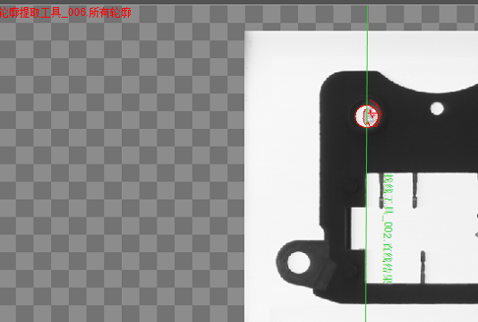

直线到轮廓交点工具计算输入图像中一条直线与轮廓之间的交点，并输出交点坐标集合。其应用效果下图所示。

| 分类 | 参数名称 | 参数描述 |
|---|---|---|
| 属性窗口 | 排序方式 | 用户根据实际需要选择“默认排序”、“X坐标从小到大”、“Y坐标从小到大”排序。 “默认排序”指按照直线与轮廓先后相交顺序输出所有交点。 “X坐标从小到大”指输出交点会按照所有交点X坐标从小到大依次输出。“Y坐标从小到大”指输出交点会按照所有交点Y坐标从小到大依次输出。 |
| 图像窗口 | 输入图像 | 显示待检测的图像。 |
| 直线 | 将要求交点的直线。 | |
| 轮廓 | 将要求交点的轮廓。 | |
| 数据链 | 输入图像 | 输入图像宽度、高度、像素大小，同图像窗口的输入图像参数。 |
| 直线 | 将将要求交点的直线。 | |
| 轮廓 | 将要求交点的轮廓。 | |
| 高级界面 | 无 | 无 |
| 分类 | 参数名称 | 参数描述 |
|---|---|---|
| 监视窗口 | 输入图像 | 输出图像宽度、高度、像素大小。 |
| 交点集合 | 直线与轮廓的交点集合。 | |
| 执行结果 | 工具执行结果。 | |
| 执行时间 | 工具执行时间。 | |
| 图像窗口 | 输入图像 | 显示工具执行结果图像，同监视窗口的输入图像参数。 |
| 交点 | 直线与轮廓的交点集合。 | |
| 执行结果 | 显示工具执行结果，执行成功显示“OK”，执行失败显示“NG”，同监视窗口的执行结果参数。 | |
| 数据链 | 交点集合 | 直线与椭圆的交点图像坐标集合，供后序工具使用，同监视窗口的交点。 |
无
无
参见“\Samples\直线到轮廓交点工具.gvp”。